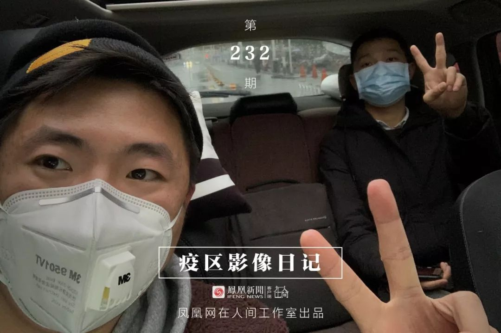
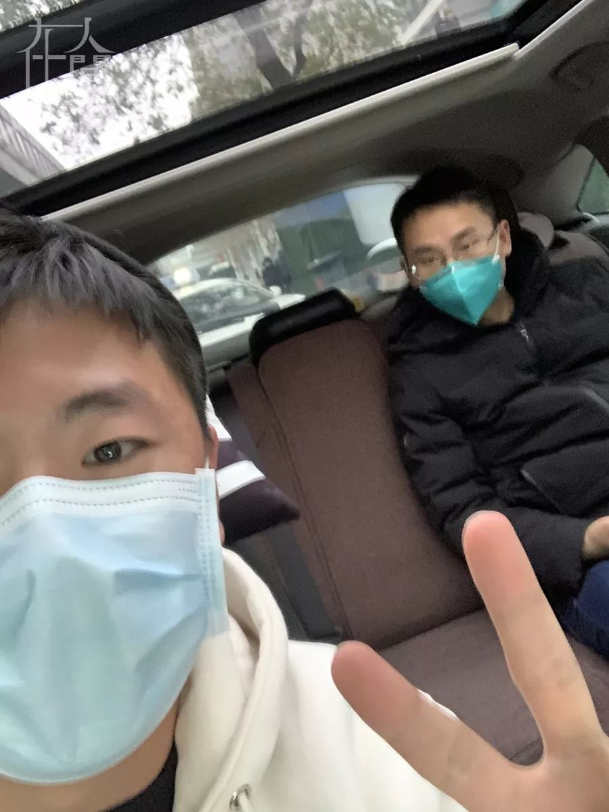
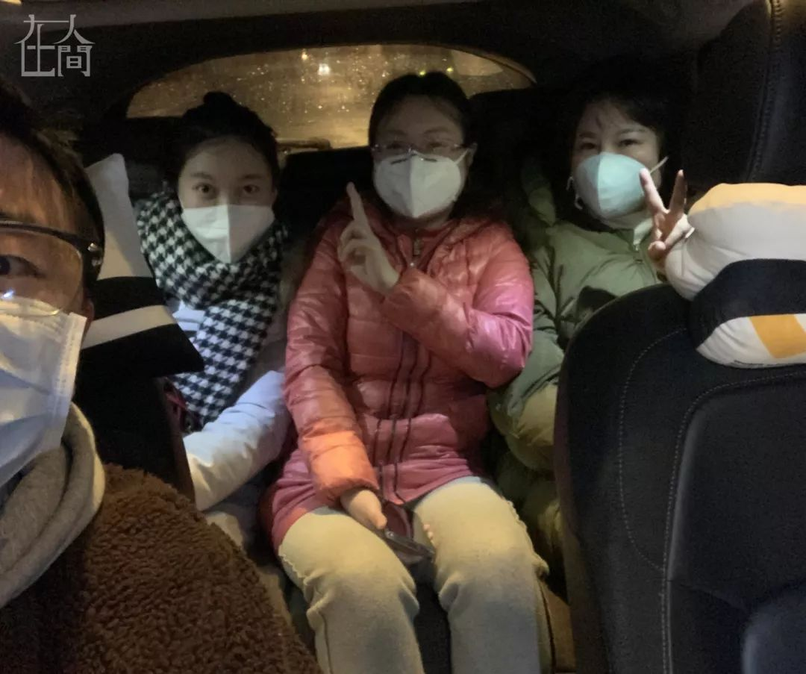
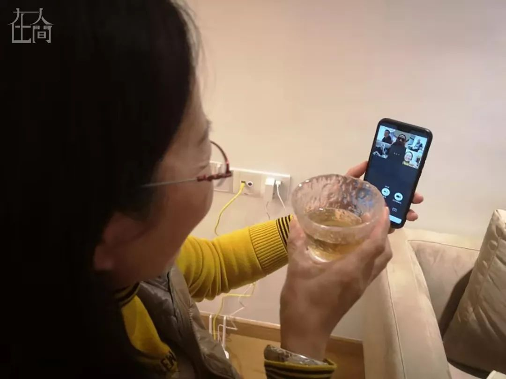
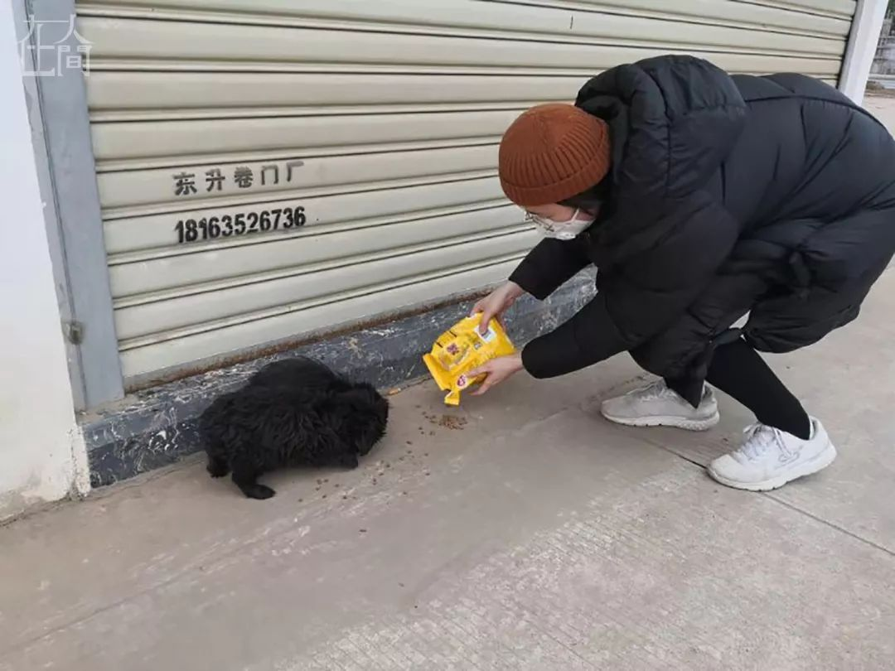
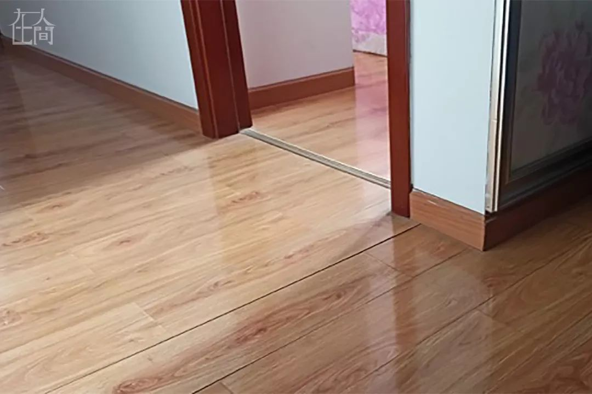
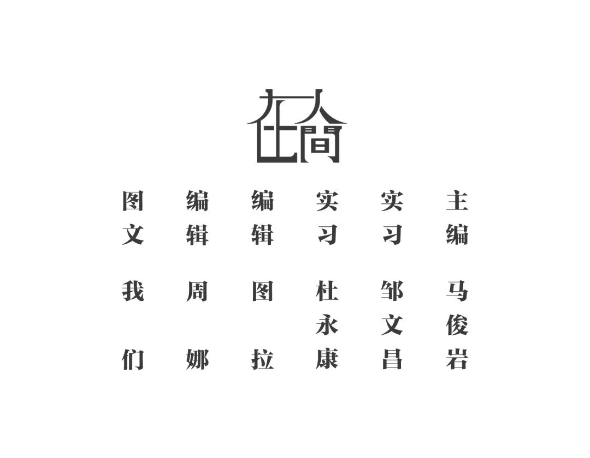

我家离华南海鲜市场很近：返乡、封城、过年，一位武汉大学生的过去一周
原文链接 备份链接 本文故事来自一名化名为“平安”的武汉大学生，记述了她从返乡、封城，再到过年所经历的种种。这个特殊的春节，焦虑与希望同在，寂静与喧嚣并存。身处「风暴中心」，从慌乱到乐观，她的心理发生了什么样的变化？让我们一起来看看她过去 …


1⁄7
*不为这座城市做点什么，最后，可能这座城市就完了……*
2020年1月30日
@雷锋小杨
坐标：武汉
大家就叫我雷锋小杨吧，我也不想留名。
我是武汉人，做酒店管理工作。我们的酒店在远城区，现在还在营业，我就利用工作之余，接送医护人员上下班。
刚听到封城消息时，我就想到了医护人员和政府单位职工上班的问题。24号上午我发了一个微博，说可以免费接送医生上下班。后来，我搜到了一个志愿者群，群里有志愿者，也有需要接送的医护人员，大家可以在群里直接对接沟通，告知上下班时间地点什么的，我就这样更多参与到志愿接送中。

我们在车上不怎么聊天，一般就简单地聊一两句，他们上班都很累了，我怕影响他们休息。
但我会在到站的时候，征求他们的同意拍一张合影，留作纪念。我碰到的每一个人都特别愿意，于是就留下了我们一起戴着口罩的各种合照自拍。

在我接过的乘客中，有一位小护士给我留下了特别深刻的印象，她大概是1998、1999年生的吧，她本来在儿童医院的康复科，但她志愿申请去一线支援。那天她刚刚提交了申请，现在可能已经去一线了！
她说，在我没有接送她之前，她上下班要步行，要一个小时的路程，当时我听了特别难受，一边开车，一边流眼泪……

那天下车后她还给我发了个短信，特别善良的一位小护士。

因为封城，我一直住在工作的酒店，没有回家和父母住。我在志愿接送医护人员的第一天，给家人说了说，父母特别担心，可以说是坚决反对。后来几天，为了不让他们担心，我就没有跟他们说了。包括我的同事，也都不知道我在做这个事情，我也担心他们，就刻意绕着他们走。
其实，我自己还真不是特别担心，我全程都很注意保护自己和别人。比如我开车的时候，会把车窗摇下来一点，不会全程都在密闭的空间，乘客下车后，我都会在座位上喷洒酒精消毒。

现在很多医院也有班车了，用车需求比之前有减少，但我看群里面还是很多医生需要接送，所以有时间时，我也还会继续做这个事情。

你看我戴的口罩，大都是我接送的医护人员送给我的。
到现在为止，我一共仅接送了十几位医护人员。我看到报道说志愿者车主有5000来个人，我觉得我就是5000分之0.5吧，因为我都是选择性地接一些离我比较近的医护人员。群里有的车主，看到需要帮助的他们就会去接，不管顺路不顺路，不管在哪儿，离他们有多远，都去接！

我之前当过兵，现在虽然退下来6、7年了，但是还是觉得自己有责任来做一点事情——这是我做过的特别有意义的一件事了。
有些事情总是要有人去做的，不为这座城市做点什么，最后，可能这座城市就完了……
2⁄7
*人们不能像以往那样团聚，但至少心在一起*
@沛溪
坐标：武汉

2020年1月26日
微信收到一条求助微信，来自湖北省中医院昙华林院区急诊科护士，她一个人住在白沙洲，没有任何交通工具，现在根本没有办法去医院上班，问了社区也没有出租车。我连忙发朋友圈求助，令我没想到的是，朋友圈小伙伴们帮助解决问题的速度非常快，十多人发来了帮助信息，那位护士的交通问题也很快得到了解决。那一刻我觉得渺小的自己能帮上忙，顿时责任感爆棚，很开心。今天武汉市内机动车也禁行了，我从窗外看去，一片安静。
2020年1月27日
早晨起来，睡眼惺忪，就赶紧先看下最新的疫情消息。这一天，和疫情相比，能让朋友圈炸锅的还有一则消息：科比空难离世。天啊，2020这是怎么了。
今天是封城后在家蹲的第4天，我们一家人3天没出门，感觉快憋坏了，全家最终商议全副武装带好口罩，在小区里跑步。小区里也没人下楼，楼下除了保洁人员，就我们了。妈妈们甩着手臂大步向前走。我和爱人特别珍惜能够下楼的时光，就连跑3圈。进家后，全家把外套晾挂在通风处，洗手喷酒精。
2020年1月28日
今年家人拜年的方式是视频通话，各家举杯在视频里相互拜年，妈妈笑得合不拢嘴。尽管家人们不能像以往那样团聚，但至少心在一起。
下午，我们在家实在是待不住了，就想着在家附近溜达，一路上遇到了很多在外流浪的毛孩子。有的蜷缩在卷拉门外，有的依偎在一起，有的一看到人来，赶紧钻进车底。我突然意识到在城里孤独的不止我们，还有成千上万的它们，也许还有很多毛孩子被主人遗落在家，也在被迫接受“隔离”。路上我们遇到了一只小猫，竟然跟着我们走了1公里路……从超市出来，我拿着刚买的猫粮狗粮，希望在回家的路上能尽一份微薄之力。


夜晚即将到来，期望在外流浪或被主人遗落在家，没有人疼的毛孩子们都可以看到第二天暖暖的太阳。
3⁄7
*对于每个普通人来说，照顾好自己就是在做对的事了*
@冰点
坐标：武汉

2020年1 月26日
今天是封城第四天。除了我爸在大年三十的晚上去单位值班，我们一家人都没有外出过。从我们家可以看见武汉的三环线，往常都是车水马龙，如今只是偶尔有车经过，其中还有救护车。小区里更是人迹全无，除了偶尔出没的消毒人员，大概家家户户都像我们家一样，缩在自家的小世界里了。
最近几天，朋友圈里转的都是医院物资匮乏和民间渠道募集的消息。我看到世界各地的朋友们都在关心武汉，心里有点感动。还有很多朋友每天都来问我一遍：今天怎么样了？而我每天都会回复他们：今天疫情状况不太好，但我们家一切正常。疫情很糟糕，但对于每个普通人来说，照顾好自己就是在做对的事了。”在这样的特殊时刻，如果我们做不了冲在一线的英雄，本本分分地做对的事，也算是一种渺小的伟大吧。
2020年1月27日
大年初三，武汉进入封城第五天。
这几天窗外一直都很阴郁，前两天还下了小雨。家里开了空调，我们一家人白天就在沙发上窝着。妈妈说，这日子已经让人分不清是春天、秋天还是冬天了。爸爸还是一如既往地关怀着那盆开了没几朵的水仙花，希望它能再多开几朵，给家里带来一些生气。
好像不止是武汉，全国人民在这个春节都快要闲得发慌了。我有朋友在群里进行“表情包大战”，有朋友闲到开始和Siri对话，还有个朋友说她“长在了床上”，每天和妹妹一块打游戏……
爸妈在我回来之前都没有意识到疫情的严重，但在封城之后也很快地接受并适应了。我们家每天都很平静，日子照常过，囤的食物暂时还够吃几天，大家都不去讨论“封城”究竟什么时候会结束。一切都只能静观其变。
令人欣慰的是，防疫到了这个阶段，我感觉“阴谋论”和“事后诸葛亮”的论调少了一些，理智提出合理疑问和讨论解决方案的声音更多了。同学群里则更多地讨论起和我们息息相关的事情——如何返回北上广深，以及回去之后怎么办。
2020年1月28日

武汉进入封城第六天了。今天上午，武汉终于久违地有了阳光。晴朗的日子总归是令人开心的，但外面的世界还是一如既往地冷清。
就在昨晚，我们一家正在看电视，突然听到窗外传来声响。我跑到阳台上，发现是小区里的人在呐喊，男人、女人、大人、小孩都在喊“武汉加油”，还夹杂着一些听不清的词句。我上一次见到这种场景，还是毕业前夕各个宿舍楼合唱民间校歌呢。
下午的时候爸妈还在说，“武汉人民都敢让总理跟着一起喊口号”。也许是总理的几句“武汉加油”鼓舞了大家，晚上的时候，被生生封锁在家里五天的武汉群众终于都忍不住要发泄一下。但这种发泄行为很快就被“专家意见”泼了一盆冷水，说是如果楼上楼下同时打开窗子，张口喊话唱歌，就有飞沫传播的风险。

■ 外面楼上写着武汉加油。
昨天晚上还是得知了一个好消息：我有个住在襄阳的发小，因为连续低烧担惊受怕了好几天。为了避免传染家人，她主动住进了另一个房子里，大年三十晚上都是独自吃的饭。她昨天拿到了医院检查结果，显示一切正常！祝她早日康复！
2020年1月29日
我们一家人还是像往常一样，吃过饭就一起窝在沙发上，然后各做各的事。“疫情”会成为我们的讨论话题，但不会成为唯一的话题。
我时常觉得，在不开心的日子里就更要开心地活着。不要剥夺自己和他人开心的权利，不要因为自己安然无恙而感到内疚。我们每个人的镇定才是一线防疫人员最坚实的后盾，我们多一份健康和冷静，医院里就会少一份辛劳和混乱。有的时候，世界越是混乱不堪，井然有序的日常越能够给人力量。
如果尚有余力，每个人都可以为防疫工作做些什么。哪怕是在家中录一段弹唱视频鼓励更多人、写几篇封城日记传播武汉民众的声音、给信任的渠道捐些善款或物资、为周围的亲人朋友送去问候……不论这些渺小的举动能产生多大的影响，多少也能缓解自己心中的无力感。
昨天晚上，我喜欢了十五年的歌手林俊杰给奋斗在防疫一线的医护人员写了首歌——《Stay with You》，我听完之后深受感动。有的时候，精神的力量远比想象中要强大。面对新型冠状病毒，我们不要害怕它，也不要轻视它。如果每一个普通人都能做到，也许我们就离战胜它不远了。
今天是大年初五，武汉封城第七天。今天的武汉也是阳光明媚，我们全家人又健健康康地在一起度过了一天。很多年后当我们再回想起这一年，再回看这座城市曾经的伤痛，我们会想起在那个“特殊”的春节，我们的城市没有陷入瘫痪，我们也没有陷入恐慌。我们会记得，我们始终相信着这座城市，我们一直和它在一起。
4⁄7
*谢谢武汉之外的关心，我在武汉很好*
2020年1月29日
@天蓬元帅和齐天大圣
坐标：武汉

封城之下的大年初三，道路空旷，昔日热闹的城市无比地安静。武汉人克制、有序、从容，因为我们背后有无数英雄负重而行。

口罩是出门必须装备，药店门口排队买口罩，超市进门测体温。

生鲜品种虽少点也够吃，惊现重庆的爱心菜，其它商品影响不大。

这天也是我小儿子三周岁生日，没买到蛋糕，没有蜡烛，好在还有变形金刚，小人一样开心。
谢谢武汉之外的关心，我在武汉很好，也请你们不管在哪里都保护好自己和家人，祝大家都安康。大家对武汉和武汉人情感复杂，我只想记录下普通市民眼里这个特殊的春节。
5⁄7
*没钱交房租，妈妈再帮你贴一点嘛*
2020年1月27日
@张恒
坐标：武汉
今天看到消息说回上海的动车已经停运了，如期回上海已经不做指望。虽然早就知道武汉封了城，但总还有一丝侥幸，万一疫情突然好转呢。停运消息出来，算是给我的幻想画了一个句号，清晰地告诉我：回不去了。
我以为在解除封城的第一天，就能以最快的速度回到上海。打开12306购票软件才发现，就算2月中旬武汉能解除封城，整个2月也都已经没有余票。爸爸说，那些没有如期离开武汉的人，都会集中在解封的那几天爆发性地离开武汉。妈妈安慰我说，没关系，就算买不到票了，你就当最后一个走的也行，大不了你就叫他们少发你一个月的工资嘛。
我夹起妈妈炒的洪山菜薹放到自己碗里，低头吃饭没说话。妈妈突然说，“你到时候没钱交房租，妈妈再帮你贴一点嘛。”我把菜塞进嘴里，抬头敷衍了一句，“唉，到时候再说吧。”心里想着妈妈永远都清楚我在琢磨什么。
6⁄7
*今年的愿望很简单：**父母和身边人都平安*
2020年1月29日
@马小宇
坐标：天津

坐标天津，三口之家。我平时工作在外，腊月二十六回家时，疫情还没有这么严重。看到武汉回应“可防可控”，我相信了，坐大巴回家的路上没有戴口罩。
到了腊月二十八，疫情就很严重了，各官媒一直呼吁：减少外出。
腊月二十九，武汉封城。
这一天看了很多关于封城的报道，也信了不少谣言，内心很恐慌，在跟朋友聊天中我反复说到“害pia”。正如网上段子说的那样，“终于到了什么也不做，就能为祖国做贡献的时候了。”
临近过年家里囤货不少，够吃20天左右，所以除了日常扔垃圾外，我和家人都尽量避免出门，所以在戴口罩这件事上，没发生太多冲突。
 年三十中午，餐桌上没有海鲜。
年三十中午，餐桌上没有海鲜。
虽然海鲜与新型冠状病毒无关，不过得知天津有确诊的新型肺炎病例后，我们还是放弃了螃蟹和皮皮虾。
看春晚期间，与父母互赠红包。不同于往年的祝福，今年的愿望很简单：父母和身边人都平安。
大年初一下午3点多，接到姥姥的电话，村口封路了，让我们一家明天不要过来了。人生第一次，初二没回姥姥家。
然后一直“躺尸”到现在，每天的活动轨迹基本为：卧室、卫生间、餐厅、客厅……循环。
想对所有奋斗在一线的医护人员说，“虽然我们素未谋面，但你们一定要平平安安”。
7⁄7
*只要还有一口吃的，就一定不要出门。**切记！**切记！*
2020年1月29日
@双十一张友文
坐标：武汉
某医院医生提醒说：“明后两天是爆发期，大量的潜伏期都会表现出来，近一周大家都不要出门，只要还有一口吃的，就一定不要出门。切记！切记！”
在家待一天可以，待两天也受得了，三天四天呢？时间长了，就与坐牢的滋味无异了。这次疫情，不仅让某些官员深刻的反思，甚至会受罚，同时也让老百姓闭关沉思：人活着，什么才是最重要的？



新型肺炎疫情牵动人心，
《在人间》现面向全国网友征稿：
(一) 疫区影像日记
如果你身处疫区
请你用照片（视频）和文字记录
你所听闻和见到的一切
照片不少于3张
文字不少于300字
投稿方式：微信联系人间君（zairenjianliving）
（二）抗击疫情真实故事
无论你是一线医护人员、志愿者、
确诊或疑似患者及家属、已治愈出院人士等等，
如果希望讲述疫情相关经历，
请微信联系人间君（zairenjianliving）

文章已于修改
原文链接 备份链接 本文故事来自一名化名为“平安”的武汉大学生，记述了她从返乡、封城，再到过年所经历的种种。这个特殊的春节，焦虑与希望同在，寂静与喧嚣并存。身处「风暴中心」，从慌乱到乐观，她的心理发生了什么样的变化？让我们一起来看看她过去 …
原文链接 备份链接 1⁄10 2020年1月25日，农历大年初一 来信：@徐大夫 坐标：武汉某心内科重症监护室 我们科室新年第一天上班的合照。 大家一起努力！ 2⁄10 2020年1月25日 来信：@双十一张友文 …
原文链接 备份链接 （图片来源：林晨同学Hearing） 一条拥有至少41万来自湖北的读者。 今天是大年初一， 我们完全没有心情过年。 过去两天， 我们一起经历了武汉正式封城， 后来湖北各市陆续传出封锁的消息， 全国多个省启动 重大公共突 …
原文链接 备份链接 封城已过去一周，在这个谈武汉人、湖北人色变的时候，我们想要好好看一看他们。今天我们挑选的几篇读者来稿，围绕着湖北的武汉和黄冈，讲述他们在旋涡和风暴中心的日子。他们有些住在城市，有些住在乡村和小镇。环境的不同给了他们不 …
原文链接 备份链接 转眼之间，武汉封城，已有九日。绝大多数人都闭门在家时，一些还在为城市运送物资和生活用品的人，在尽其所能保障着城市的基本运转。如果把现在的武汉比喻成一具遭受病毒侵袭的人体，他们就像是人体里细小密集的毛细血管，努力延续着这 …